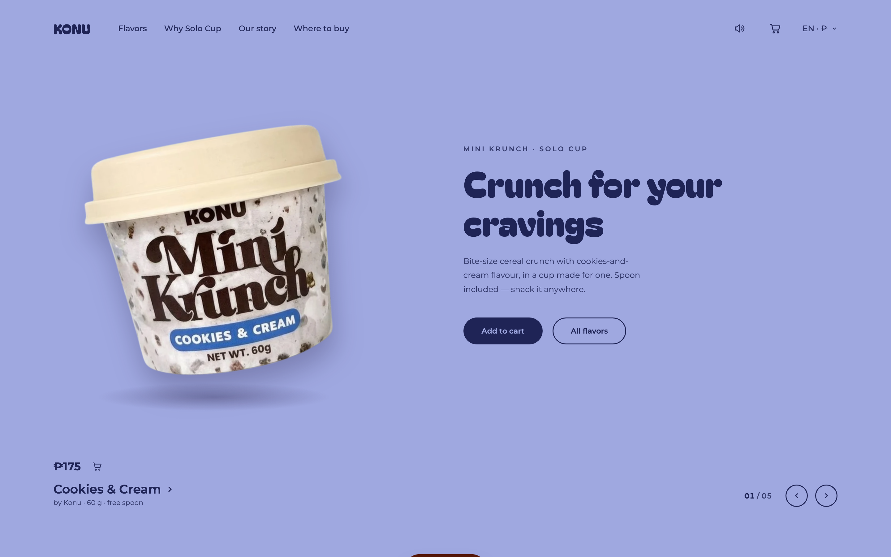
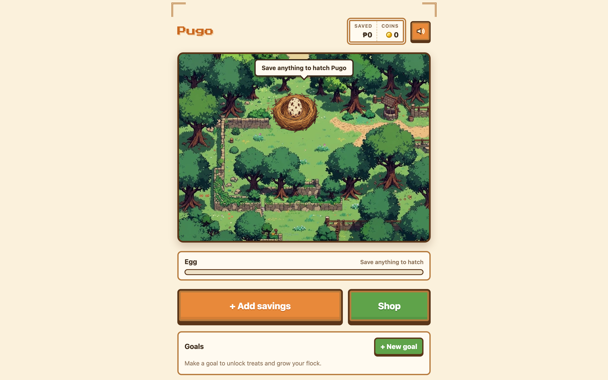

Landing page · Scroll animation
Leemo Cocktails
A cocktail bar landing page where the scroll tells the story.
HTML · CSS · JavaScript · GSAP
10 live projects,
11 small studies.
Real websites, running live. Click any window to try it.
Landing page · Scroll animation
A cocktail bar landing page where the scroll tells the story.
HTML · CSS · JavaScript · GSAP

Product website · Client work
A product site for Konu's cereal cups, with a flavor slider, a cart, and English or Korean.
HTML · CSS · JavaScript · localStorage

Journal app · Node backend
An Inside Out–inspired journal that keeps each feeling as a glowing memory orb.
Preview runs in guest mode. Accounts need the Node.js server.
HTML · CSS · JavaScript · Node.js

Learning platform
Learn CSS by solving 48 debugging cases with live editing and hints.
JavaScript · CSS · Sandboxed iframes · localStorage

Browser game · Savings pet
A pixel-art savings game: every peso you save helps your quail grow.
HTML · CSS · JavaScript · localStorage

Productivity app
A soft, local-first focus timer with tasks, ambient sounds, and history.
HTML · CSS · JavaScript · localStorage
A Filipino word companion with search, categories, and a word of the day.
An editorial biography page with a quote section and a responsive timeline.
CSS layout documentation with a sticky sidebar and expandable notes.
A landing page for beginner aquascaping kits.
Small projects where I practice specific HTML, CSS, accessibility, layout, and responsive-design skills.
A multi-page website built with semantic HTML — home, projects, articles, and contact pages joined by one navigation bar.
A semantic CV website built with HTML, SEO meta tags, Open Graph tags, and a favicon.
A responsive timeline component built to practice CSS positioning, pseudo-elements, and media queries.
A responsive collection of testimonial cards using CSS Grid, Flexbox, profile images, and varied card layouts.
A static calendar interface built with HTML and CSS Grid, ready to become interactive with JavaScript later.
A sign-up form with accessible labels, focus states, ARIA attributes, error-message areas, and a progress bar.
A responsive six-image gallery using CSS Grid, local image assets, and different grid-item spans.
A CSS-only navigation tooltip with hover effects, keyboard focus support, smooth transitions, and accessible markup.
An accessible pricing comparison page using a semantic table, captions, scopes, merged cells, and CSS.
A semantic, responsive blog post with meaningful text elements, accessible images, code blocks, and quotes.
A three-card pricing component using Flexbox, equal-height cards, a highlighted plan, and interactive button states.
Send me a message and I will get back to you as soon as I can.
Contact me